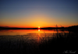

Salla and Raoul's wedding
17th - 19th July, 2015
Storfinnhova Gård, Kemiönsaari, Suomi
Where?
I said, Storfinnhova Gård, Kemiönsaari, Suomi! It's "an all-year-around premium center for festivities, conferences and educational-workshops". Should have all our bases covered, then. It's in a forest on an island in Finland. Here's a map:
When?
Friday 17th July
 2pm Bus from Helsinki airport. We might hire a coach
2pm Bus from Helsinki airport. We might hire a coach
 6pm Arrival at venue, introduction to mosquitoes
6pm Arrival at venue, introduction to mosquitoes  6pm Pre-wedding BBQ, sauna
6pm Pre-wedding BBQ, sauna
 8pm Beers.
8pm Beers.- 10:35pm Sunset
Saturday 18th July
- 4:36am Dawn
 12pm Wedding brunch. Alternatives to pickled herring may be available.
12pm Wedding brunch. Alternatives to pickled herring may be available. 6pm Admin - Speeches, rings, vows, etc
6pm Admin - Speeches, rings, vows, etc 7pm The main event - dinner. Pickled herring for all!
7pm The main event - dinner. Pickled herring for all!- 9pm I guess there has to be music
 10:33pm Sunset
10:33pm Sunset
Sunday 19th July
FAQs
Where will I sleep?
We're booking villas and tree-house-huts at the venue. You shall be assigned appropriate sleeping space.
What should I wear?
We're not going to be formal. Something smart, or something cool. Heels are going to be a liability.
Should I bring gifts?
Only for the sauna gnomes, not for us, thanks!
What will I eat?
Raoul was joking about the herring. Catering will be vegan-friendly. There will also be meats.
Will I be left to die in the woods if I don't speak Finnish?
Don't worry, you'll be fine. Literally tens of people visit Finland every year, and a surprisingly high percentage leave intact.
How many people will there be?
Around 30-40
Will they be nice?
Yes
How do I get to Finland?
BA, Finnair from Heathrow to Helsinki. Takes about 3hrs, costs about £200 for a return
If you can't fly, I suggest rail - London -> Paris -> Copenhagen -> Stockholm, then ferry to Turku.
Ok, I'm in - what do?
Email us